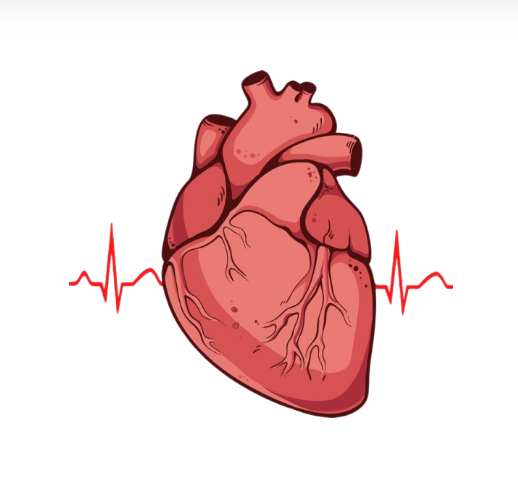

This is a local demo page for the Heart Disease Prediction project. It links to the GitHub repository and shows a sample image.

The full project repository (code, model, and instructions) is available on GitHub — click the button below to view it.
If the repository includes a demo app, follow the README instructions on the repo page. This local page is a simple placeholder demo so the portfolio's "Live Demo" link works immediately.